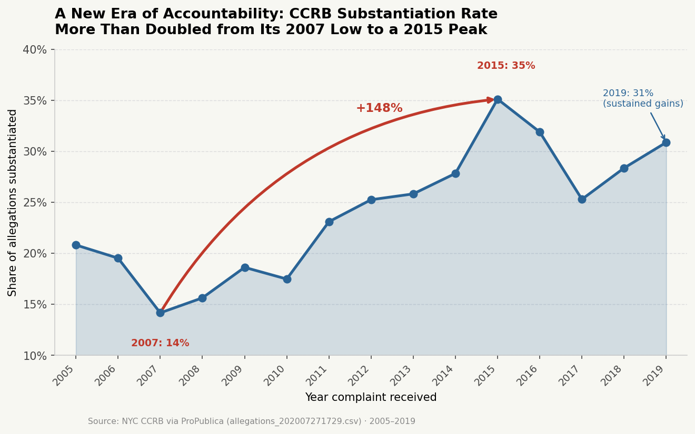
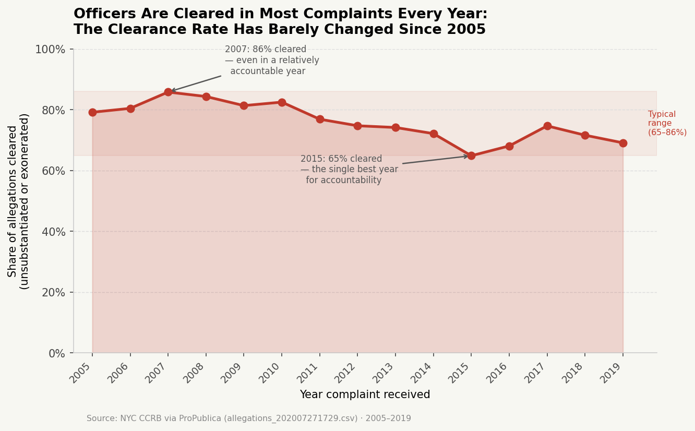

Beckett Devoe · Vis & Society 2026
"The NYPD Civilian Complaint Review Board has become increasingly likely to hold officers accountable for misconduct."
Dataset: Civilian Complaints Against New York City Police Officers (ProPublica, allegations_202007271729.csv). This dataset contains over 33,000 civilian complaints filed against NYPD officers between 1985 and 2020, including dispositions, officer demographics, complaint categories, and outcomes.

Decision 1: Truncated y-axis (10 to 40%)
Score: -2
I set the y-axis to start at 10% instead of 0%, which stretches the 21-point change across nearly the full chart height. In visual terms, it makes a modest swing look like a near-doubling. On a zero baseline, the line would barely move away from the center of the chart. This is the single most important deceptive choice. It works because it operates at the perceptual level rather than the textual level. Readers feel the magnitude before they consciously evaluate it.
Decision 2: The red arrow from 2007 to 2015
Score: -2
I anchored the narrative to the record low and record high instead of any other pair of years or the full trend. This is unapologetic cherry-picking, but it's subtle because the endpoints do exist in the data. They're just the 2 most extreme years out of 15. The bold red arc draws the eye immediately and makes the selected framing feel inevitable rather than selective. Viewers see the arrow first and are primed to read the 2007 to 2015 jump as "the story" before they even notice the messier years before and after.
Decision 3: "+148%" in bold red on the arc
Score: -1.5
I chose to label the arrow with relative growth (148%) instead of absolute change (21 percentage points). Both are mathematically correct, but relative growth sounds way more dramatic. Most readers won't mentally convert it back to percentage points. The bold red typeface makes the number feel urgent. If I'd included both figures or a percentage-point label, the persuasive punch would have been way weaker.
Decision 4: "Sustained gains" label on 2019
Score: -1.5
The substantiation rate dropped noticeably from 2015 to 2017, then partially rebounded by 2019. I labeled the 2019 endpoint as "sustained gains" to frame this as a temporary dip rather than a regression. I could have simply labeled it "2019: 30%" and stayed neutral, but the interpretive framing reinforces the proposition's narrative without technically lying. It's the kind of move a persuasive presentation would naturally make, emphasizing recovery over decline.
Decision 5: Title language: "A New Era of Accountability"
Score: -1.5
I titled the chart with loaded language ("New Era," "Accountability") instead of neutrally describing it as "CCRB Substantiation Rate Over Time." Loaded language primes the reader to interpret the upward trend as meaningful systemic change before they've examined the numbers. "More Than Doubled" reinforces the relative growth framing and plays on anchoring effects. People tend to judge relative changes as more significant than they actually are.

Decision 1: Full 0 to 100% y-axis
Score: +2
The full y-axis immediately contextualizes the data. The clearance-rate line occupies the upper half of the chart, making it visually obvious that officers are cleared in most complaints. Year-to-year variation is modest. This directly undercuts the exaggerated impression created by the truncated axis in Visualization 1. It's the earnest equivalent of a corrective intervention. The zero baseline isn't stylish, but it's honest.
Decision 2: Showing clearance rate instead of substantiation rate
Score: +1
Both metrics describe the same data, one is just 100 minus the other. But they tell different stories. By plotting clearance rate, I'm foregrounding what actually happens in most cases: officers get cleared. The metric choice is a form of framing, but I disclose it clearly in the axis label and caption, so it's transparent. A reader could easily swap it back mentally if they wanted to. That transparency is why it lands on the earnest side.
Decision 3: The shaded "typical range" band (65 to 86%)
Score: +1.5
Instead of cherry-picking endpoints like Visualization 1 does, I computed the actual range and shaded it to make stability visually explicit. The band says: most years fall within this narrow corridor. It's still a framing choice. I could have omitted it entirely. But the choice is grounded in the data itself, not in picking convenient outliers. The band helps readers see constancy without requiring them to squint at the numbers.
Decision 4: Annotations at 2007 and 2015 that emphasize persistence of clearance
Score: +1.5
I could have hidden the outlier years entirely, but instead I named them and used their own values to make the point. Even in 2007, when accountability was supposedly at its worst, 86% of officers were cleared. Even in 2015, when Visualization 1 celebrates peak accountability, 64% were cleared. The language is blunt, but the facts are there on the chart. Readers can verify the claim immediately.
Decision 5: Title: "Officers Are Cleared in Most Complaints Every Year"
Score: +1.5
I chose a declarative title that states verifiable facts directly supported by the chart. It's not neutral or bland, it takes a position, but that position is anchored to what the data actually shows, not editorial framing. Compared with Visualization 1's language, this feels grounded. The title doesn't need tricks because the data itself makes the argument.
What struck me most was realizing how little outright falsification I needed to flip the narrative. Every single number in Visualization 1 is accurate. The rate genuinely went from 14% to 35%, and 148% is the correct relative increase. Yet by truncating an axis, selecting extreme endpoints, and wrapping them in charged language, I created an impression of transformative systemic change that the full data doesn't support. That's the power of visualization as rhetoric. You don't need to lie to mislead. The facts can stay true while the conclusion shifts entirely.
This assignment clarified something for me about where to draw the line between persuasion and deception. Persuasion that works through emphasis, like picking a relevant metric or highlighting important patterns, still leaves readers the tools to push back. They can ask hard questions and verify claims. Deception, by contrast, structurally prevents that. A truncated axis makes it perceptually harder to understand scale regardless of how carefully you're reading. It's not about technical dishonesty, it's about whether the design choice lets viewers think clearly or works against them. I don't think the line is always obvious. Relative vs. absolute framing sits in a gray zone. But I'd argue that anything requiring suppression of context the reader needs to evaluate the claim crosses from persuasion into deception. Even when every number is technically correct.